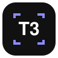

T3 Capture · Ajustes
Dispositivos de T3
Cada dispositivo es una máquina con T3 Code (tu Mac, un VPS por Tailscale…). Si en T3 tenés activados los entornos vinculados (Settings → Labs), también vas a poder elegir esas máquinas al crear el hilo.
Conectar un dispositivo
- En la máquina con T3, corré
t3 pairen la terminal (o usá un link de emparejamiento de T3). - Pegá acá el link (
http://…/pair#token=…) o solo el código.
Captura
Atajos: . Se cambian en about:addons → ⚙︎ → Administrar atajos de teclado.